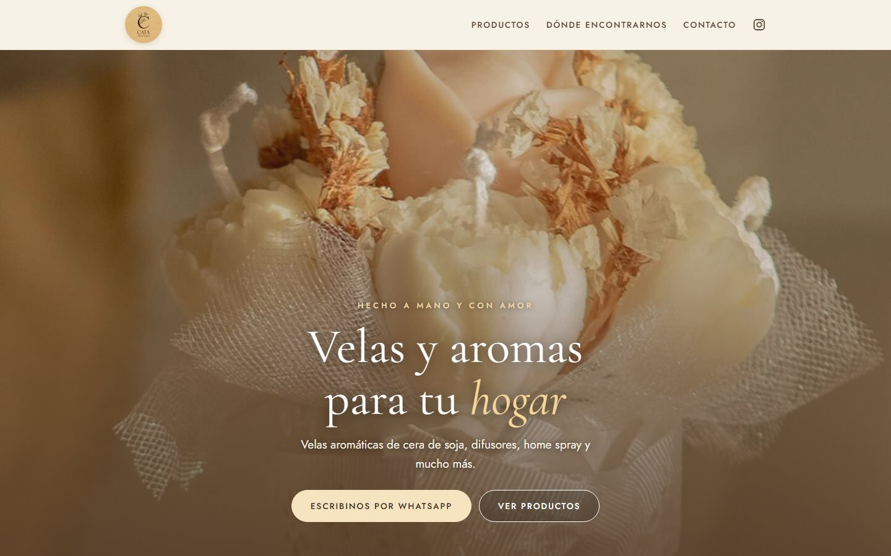
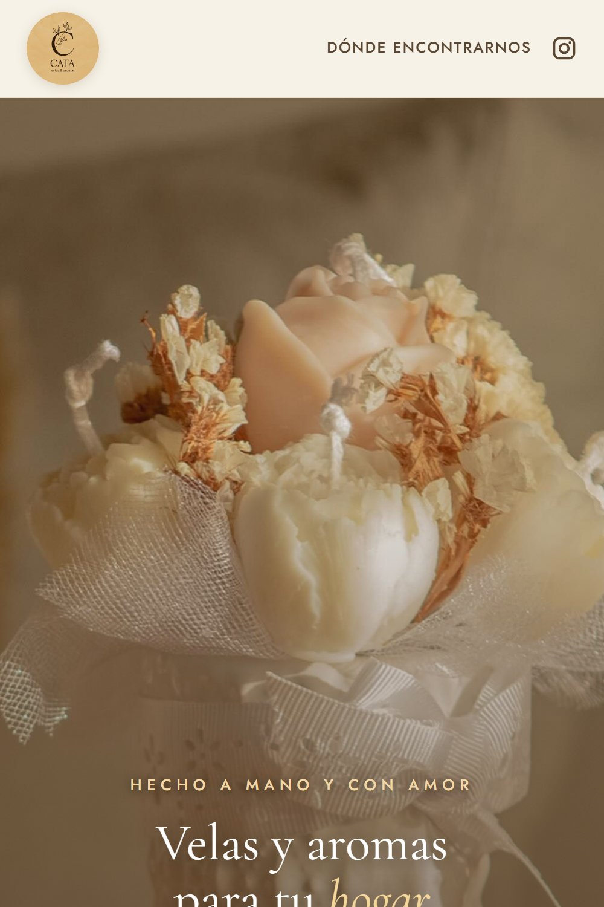
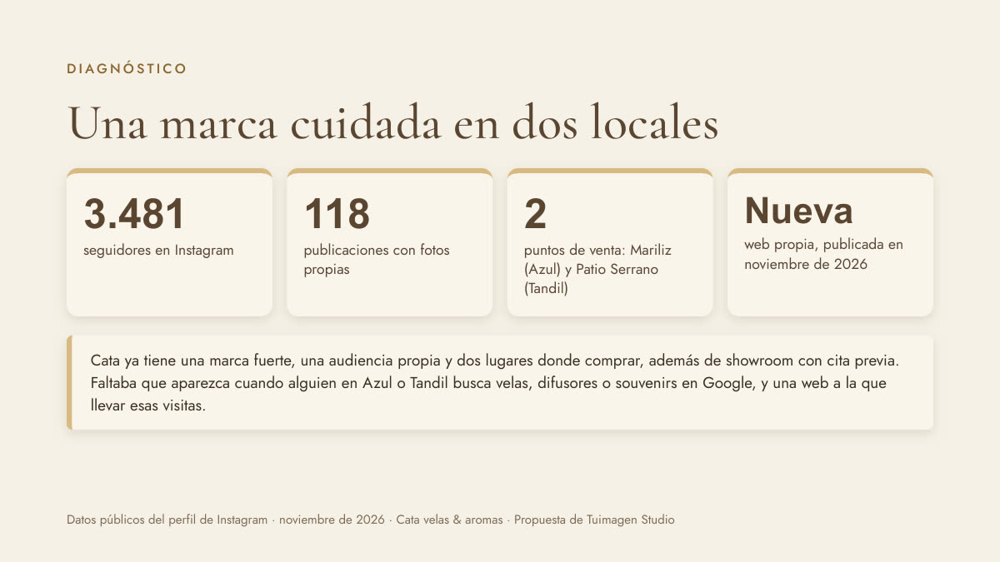

Cata velas y aromas
Un emprendimiento que vendía solo por Instagram y en locales de terceros. Le armamos su primera web, con sus fotos y su estilo, y una propuesta de Google Ads pensada para dos ciudades.

Qué hicimos
Web catavelasyaromas.com
9 productos con fotos propias, souvenirs, dónde encontrarla (con «Cómo llegar») y contacto por WhatsApp. Dominio, HTTPS y Search Console con el sitemap enviado.
Fiel a su marca
Tipografía serif elegante y la paleta de Cata: crema, arena, dorado y marrón. Textos tomados de sus publicaciones.
Propuesta de Google Ads
Dos campañas de búsqueda local (Azul y Tandil) y una fase para fechas especiales: Día de la Madre, comuniones y Navidad.
Kit para compartir
Imágenes para feed, historia y WhatsApp para que la dueña muestre su web nueva.
Algunas piezas

